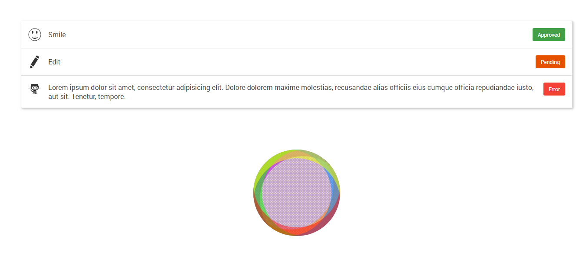

Homework

Description
- Сделать подобно картинке
- У списка есть тень
- Картинка со спрайтом лежит в images
- У каждого элемента списка рамка
- Структура не должна ломаться при наличии большого текста (что видно на последнем элементе списка)
- Иконка всегде слева, значок всегда справа
- Если текста только на одну строку, он должен центрироваться по вертикали (в скрине первые 2 элемента)
- Создать с помощью ul li
- Обязательно всем элементам задать класс
- Создать фигуру по скрину: цвета любые (но только rgba). Фигура состоит из теней (6) и градиента из трех цветов (можно 2 цвета). Это должен быть 1 блок без картинок, дополнительных элементов и псевдо элементов.